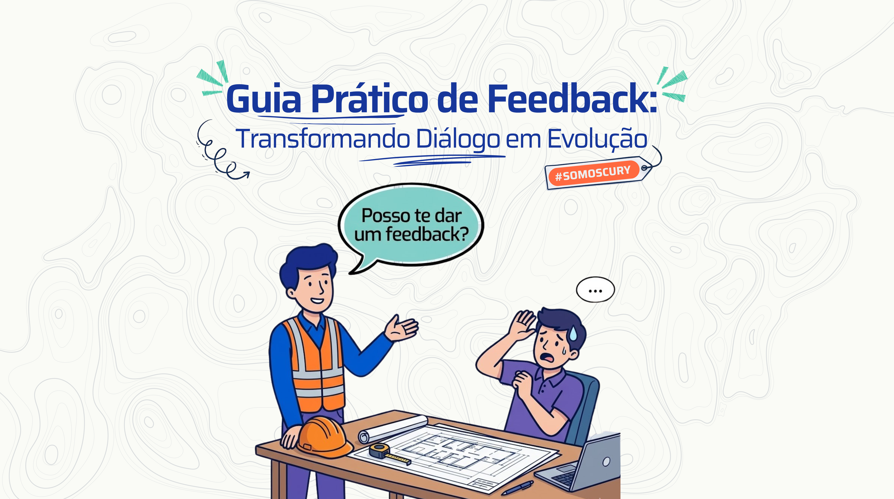

Sobre este conteúdo
O feedback é a ferramenta mais poderosa para alinhar expectativas, corrigir rotas e impulsionar o crescimento do seu time. Para que ele seja construtivo e não gere ruídos de comunicação, a Cury adota a Metodologia SCI (Situação, Comportamento, Impacto).
Acesse a apresentação completa para entender como transformar suas conversas de rotina em momentos estruturados de evolução profissional, sempre com clareza e empatia.
Acessar Apresentação